![]()
head(dimarco2020$age, 10) [1] 53 60 40 57 60 46 53 33 48 60mean(dimarco2020$age)[1] 49.29167sum(dimarco2020$age)/length(dimarco2020$age)[1] 49.29167ADCOM 2025-2026
Ultimo aggiornamento: 03-26-2026
La popolazione è l’insieme di riferimento/target dal quale eventualmente estraiamo il nostro campione. La popolazione può essere infinita o finita. Nella maggior parte dei casi, pur essendo in linea di principio finita (ad esempio le persone iscritte a Unipd) si lavora comunque su un campione.
Tramite campionamento, il campione viene selezionato/estratto dalla popolazione e diventa oggetto di misurazione e analisi. Pur essendoci diversi tipi di campionamento, la caratteristica fondamentale è la rappresentatività.
Un campione rappresentativo viene definito come un’immagine ridotta e fedele della popolazione da cui è stato estratto. L’altra caratteristica importante di un campione è la numerosità (che indichiamo con \(N\)) che indica il numero di unità statistiche.
La popolazione di riferimento è associata ad alcune caratteristiche incognite chiamate parametri e solitamente rappresentati con lettere greche \(\mu\), \(\sigma\), etc.
Una statistica è una caratteristica del campione. Mentre il parametro (ad esempio l’altezza media) è incognito, la statistica (altezza media del campione) è nota e calcolabile. Le statistiche sono stimatori dei parametri incogniti e si indicano solitamente con lettere latine minuscole (\(\bar x\), \(s^2\), etc.).
Il concetto di stima è sempre e inevitabilmente associato al concetto di errore. L’errore può essere di tipo sistematico e/o casuale. Una buona stima (fatta su un campione) non ha un errore sistematico e riduce il più possibile quello casuale.
Qualsiasi operazione applicata su un campione che ne descrive una caratteristica è definita come una statistica che, con un certo grado di errore, stima il rispettivo parametro della popolazione. Ad esempio:
Sono tutte statistiche calcolate su un campione che descrivono parametri della popolazione.
Le statistiche quindi sono dei modi per ridurre la complessità di un certo dato ed estrarre delle informazioni di interesse.
Un modo interessante di vederle è come se fossero delle domande fatte ai nostri dati. Queste domande sono fatte in modo molto mirato e forniscono risposte molto mirate.
La qualità, i limiti e la quantità di informazione della risposta sono funzione di quanto la domanda è adatta a quello che veramente voglio. In un certo senso possiamo parlare di validità delle statistiche.
Le statistiche permettono di riassumere centinaia, migliaia, milioni di dati in pochi numeri. Il prezzo da pagare è quello di capire esattamente:
Come analogia, un abstract o riassunto di un articolo è molto cognitivamente conveniente per avere un’idea generale. Per capire veramente l’argomento è necessario leggerlo interamente e magari leggerne più di uno.
Immaginiamo di avere tutta la popolazione Padovana e di voler capire il numero di cocktails bevuti a settimana in funzione dell’età. Qui vediamo la distribuzione marginale dell’età:
Qui vediamo la distribuzione marginale dei cocktails. La media è di circa 7.5:
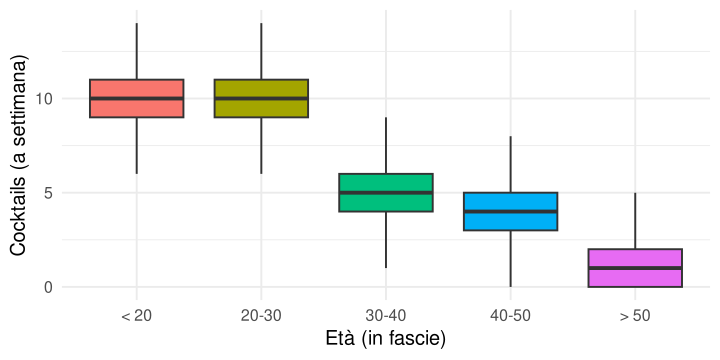
Infine vediamo la relazione tra cocktail ed età in fasce:
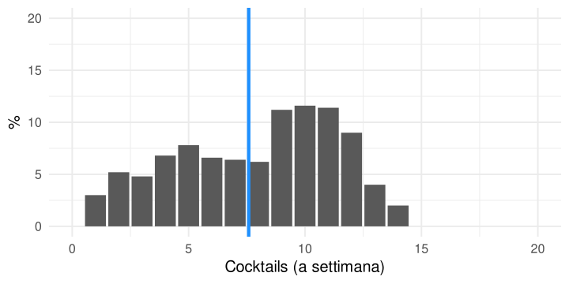
Ora immaginiamo di selezionare un campione di \(N = 500\) da questa popolazione in modo totalmente casuale. La media è di circa 7.5:
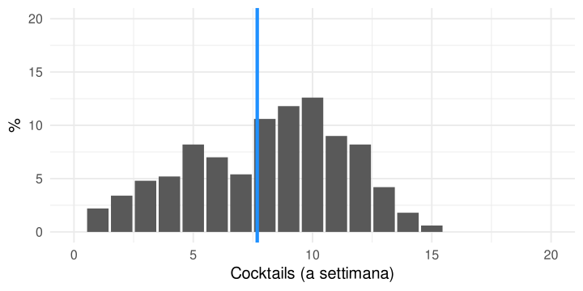
Vediamo invece, campionando in modo non casuale, selezionando con più probabilità giovani (< 30 anni)La media è di circa 9.6:
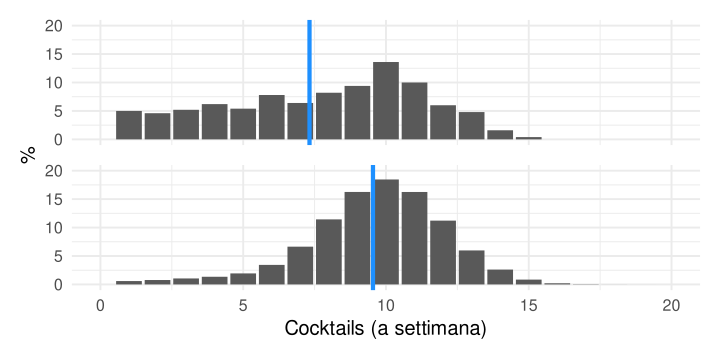
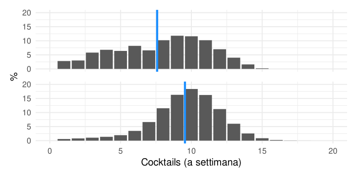
Per stimare in modo adeguato il parametro media di cocktails bevuti nella popolazione di riferimento, il campione dovrebbe essere rappresentativo per tutte quelle caratteristiche che hanno un impatto (età in questo caso).
| age | % | drinks | avg |
|---|---|---|---|
| < 20 | 0.2 | 10 | 8 |
| 20-30 | 0.4 | 10 | 8 |
| 30-40 | 0.2 | 5 | 8 |
| 40-50 | 0.1 | 4 | 8 |
| > 50 | 0.1 | 1 | 8 |
| age | % | drinks | avg |
|---|---|---|---|
| < 20 | 0.2 | 10 | 8 |
| 20-30 | 0.4 | 10 | 8 |
| 30-40 | 0.2 | 5 | 8 |
| 40-50 | 0.1 | 4 | 8 |
| > 50 | 0.1 | 1 | 8 |
| age | % | drinks | avg |
|---|---|---|---|
| < 20 | 0.3 | 10 | 10 |
| 20-30 | 0.6 | 10 | 10 |
| 30-40 | 0 | 5 | 10 |
| 40-50 | 0 | 4 | 10 |
| > 50 | 0 | 1 | 10 |
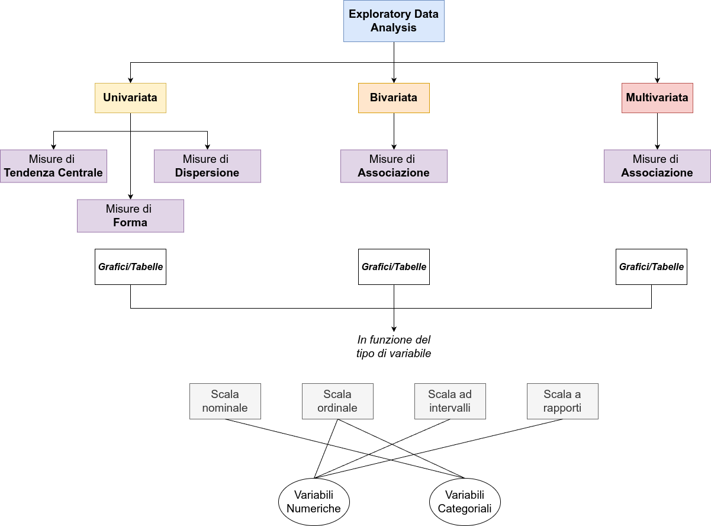
In generale, l’esplorazione (dovrebbe) è il primo passo quando si affronta un dataset. Anche nell’esplorazione ci sono degli step, quello che consiglio:
Di Marco, G., Hichy, Z., & Sciacca, F. (2020). Dataset on the relationship between psychosocial resources of volunteers and their quality of life. Data in Brief, 30, 105522. https://doi.org/10.1016/j.dib.2020.105522
Di Marco et al. (2020)
Di Marco et al. (2020) esamina come le risorse psicosociali dei volontari (inclusi benessere professionale, senso di comunità ed esperienze traumatiche) siano correlate alla loro qualità della vita complessiva. I dati sono disponibili direttamente sul sito della rivista link. Ho pulito e sistemato un pochino il dataset, lo potete trovare qui https://stat-teaching.github.io/adcom/#data oppure al QR code.
Intanto le prime cosa da fare sono quelle di capire quante righe e quante colonne ha il dataset. In questo caso abbiamo 96 righe (osservazioni/soggetti) e 24 colonne (variabili).
Importare un dataset è il primo step e non è sempre un’operazione semplice. Ho preparato del materiale riguardo gestione dei file e importare dati in R. Trovate le slide qui:
Proviamo ad esplorare ed individuare qualche tipologia di variabili.
educationageresidenceattachment (in questo caso intesa come senso di comunità)education: è una variabile ordinale con 3 modalità (o livelli) sec_school < high_school < degree.age: è una variabile numerica su scala a rapporti. In questo caso espressa in anni (quindi numeri interi).residence: è una variabile nominale (o categoriale) con 3 modalità (o livelli) north, central e southattachment: tecnicamente è una media o somma di item ordinali. Nella pratica (ma ci sono obiezioni) viene considerata una scala ad intervalli.Con esplorazione univariata si intende esplorare una o più variabili singolarmente ovvero senza considerare allo stesso tempo altre variabili. L’obiettivo è quello di:
Questo punto è molto importante. La presenza di valori anomali o errori può impattare notevolmente le analisi ed i risultati (vedremo poi un esempio). Un punto di partenza è:
Una statistica descrittiva è una funzione dei dati osservati che ha lo scopo di riassumere, sintetizzare o rappresentare in modo compatto le caratteristiche principali di un insieme di dati. Quindi:
❓ Question Time
Conoscete qualche statistica descrittiva?
Le statistiche di tendenza centrale restituiscono un valore rappresentativo o centrale di una distribuzione di dati. Questo valore può essere posizionato al centro, rappresentare un valore tipico o quello più ricorrente. Solitamente ci sono tre principali statistiche di tendenza centrale:
L’ Eq. 1 illustra come calcolare la media di una variabile \(x\) misurata su un campione di numerosità \(n\).
\[ \bar x = \frac{1}{n} \sum^n_{i = 1} x_i \tag{1}\]
Quindi prendiamo tutti (\(n\)) gli \(x\), sommiamo i loro valori e dividuamo per il numero \(n\). Quello che otteniamo è un valore che, sulla scala della variabile, rappresenta la quantità media.
Useremo poche formule ma è importante avere una notazione chiara e consistente e saperla leggere. Una volta che è abbastanza chiaro, le formule sono un modo sintetico ed efficace di rappresentare un concetto complesso.
Secondo voi, la media di questa distribuzione di dati dove si potrebbe posizionare? Perchè?
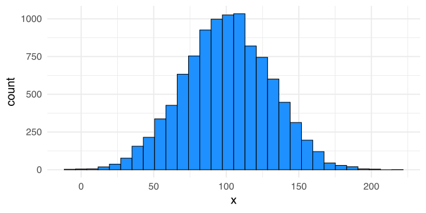
In R la media si calcola con la funzione mean oppure manualmente con la funzione sum e length:
I quantili sono un modo per dividere in base all’ordine una certa variabile. Per calcolare un certo quantile \(Q_p\) con \(p \in (0, 1)\) è necessario:
Di solito si utilizzano i percentili ovvero si esprimono in percentuale ma la logica è la stessa. Ad esempio \(Q_{40} = x\) indica che il valore \(x\) ha il 40% di dati che sono minori o uguali
Facciamo un esempio con la variabile \(x\) che rappresenta il numero di errori in un test cognitivo:
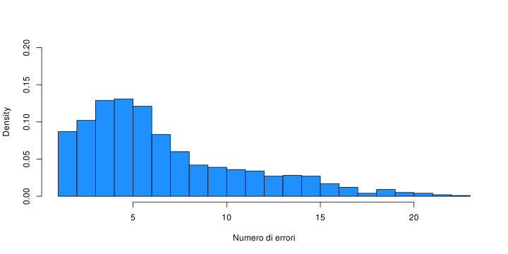
Aggiungiamo i percentili \(Q_{10}, Q_{50}, Q_{70}, Q_{90}\) direttamente sull’istogramma:
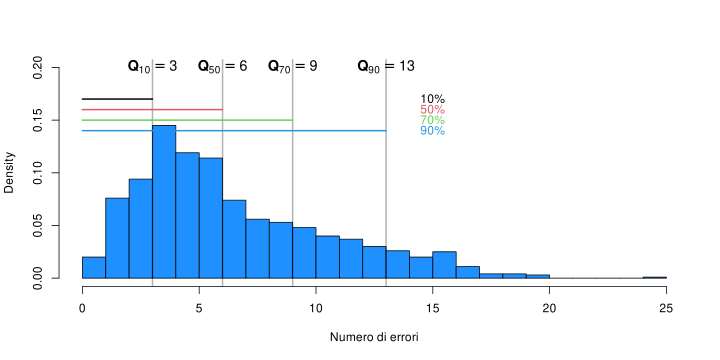
Un modo più diretto di rappresentare e capire i quantili/percentili è il grafico della distribuzione cumulata empirica dei dati.
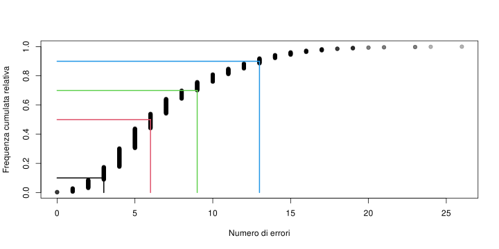
Per combinare quantili ed istogramma, possiamo rappresentare in questo modo. Vedete che ad ogni step è come aggiungere l’altezza dell’istogramma.
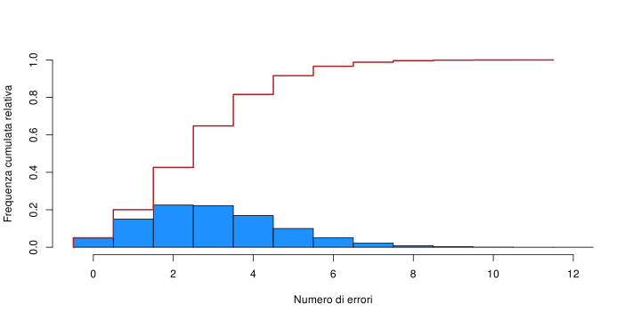
I quantili ci permettono di capire immediatamente il concetto di mediana. La mediana è il valore al di sotto (e quindi anche al di sopra) del quale abbiamo il 50% dei dati. In pratica corrisponde al 50-esimo \(Q_{50}\) percentile. Vediamo in R:
25% 50% 75%
41 50 57 [1] 50Questo significa che il 50% dei soggetti ha un’età minore o uguale a 50 anni.
Quando la numerosità \(n\) è dispari la mediana è sempre un valore esistente (ad esempio 50 anni). Quando \(n\) è pari, la mediana non è un valore esistente. In questo caso si prende la media dei due valori adiacenti.
\[ x = [18_1, 33_2, 35_3, 36_4, 44_5, {\color{red}\mathbf{48_6}}, 53_7, 55_8, 59_9, 60_{10}, 93_{11}] \quad n = 11 \]
\[ x = [18_1, 33_2, 35_3, 36_4, {\color{red}\mathbf{44_5, 48_6}}, 53_7, 55_8, 59_9, 60_{10}] \quad n = 10 \]
In questo secondo caso la mediana è \(\frac{44 + 48}{2} = 46\)
Prendiamo la variabile age del dataset dimarco2020 e rappresentiamola graficamente:
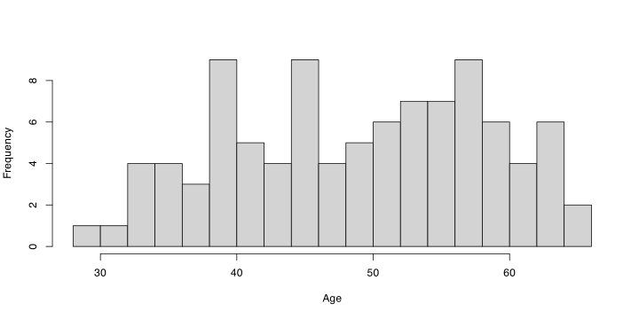
Ora possiamo aggiungere la media e la mediana sul grafico. I valori sono abbastanza simili perchè la distribuzione è abbastanza simmetrica.
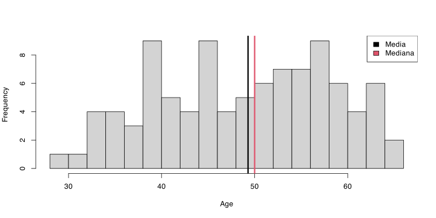
Vediamo lo stesso ma per una variabile meno simmetrica come intrinsic:
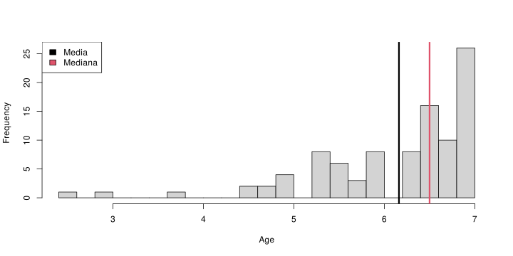
Per descrivere una distribuzione di dati le misure di tendenza centrale non sono (spesso) sufficienti. Queste 4 distribuzioni di dati hanno la stessa media.
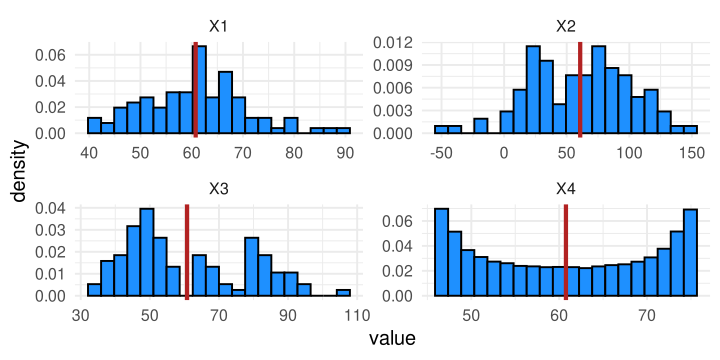
Per descrivere in modo più esaustivo i dati abbiamo bisogno di indici che ci informino sulla dispersione (o variabilità) attorno agli indici di tendenza centrale. Alcuni indici comunemente usati:
Il range è la misura più semplice di variabilità e si calcola come la differenza tra massimo e minimo di una distribuzione di dati:
\[ R = max(x) - min(x) \]
Ovviamente risente molto dei valori estremi prendendo semplicemente il massimo e minimo a prescindere da come sono concentrati i valori.
In R calcolare il range è molto semplice:
Vediamo come la presenza di qualche valore estremo faccia cambiare completamente il range. Comunque è informativo della gamma dei dati.
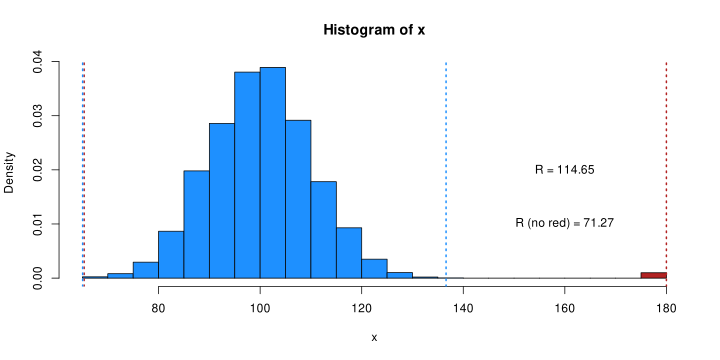
Come la mediana, IQR è un indice più robusto di variabilità perchè si basa sui quantili. In particolare è la differenza tra il 3 e 1 quartile o 75° e 25° percentile.
\[ \mbox{IQR} = Q_{75}(x) - Q_{25}(x) \]
Questi due quartili ci dicono dove è compreso il 50% di una certa distribuzione e la differenza ci dice quanto è ampio il range del 50% dei dati.
In R:
In questo caso la differenza è praticamente nulla, IQR si definisce un indice di variabilità robusto.
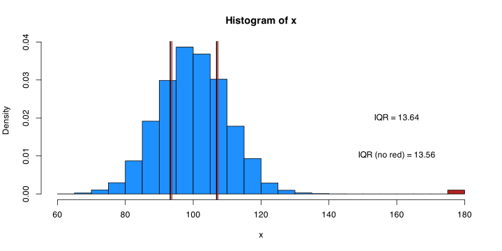
La varianza è probabilmente uno dei concetti più importanti sia dal punto di vista descrittivo che dal punto di vista del modello lineare. Vediamo direttamente la formula e poi scomponiamola:
\[ S^2_x = \frac{1}{n} \sum^n_{i = 1} (x_i - \bar{x})^2 \]
Nella maggior parte dei casi, la varianza viene calcolata usando \(n - 1\) e non \(n\). Questo garantisce di rimuovere un bias nella stima ma non è necessario approfondire.
\[ S^2_x = \frac{1}{n - 1} \sum^n_{i = 1} (x_i - \bar{x})^2 \]
Partiamo dall’elemento a destra ovvero \(\sum^n_{i = 1} (x_i - \mu_x)^2\). Questa quantità viene definita devianza o somma dei quadrati (\(SS\), sum of squares). L’idea è quella di calcolare la distanza di ogni valore rispetto alla sua media, fare al quadrato per togliere il segno e poi sommare.
Questo valore è compreso tra 0 (incluso) e \(+ \infty\) ed aumenta all’aumentare delle distanze dei valori dalla media.
La devianza può essere intesa come la somma totale degli errori rispetto alla media.
La devianza non ha una funzione in R direttamente implementata (ma di solito non viene calcolata come statistica descrittiva). Vediamo con la variabile age del dataset dimarco2020:
Se la devianza \(SS_x\) è la dispersione totale, dividendo per \(n\) ottengo la dispersione media ovvero la distanza media (al quadrato) dalla media.
Come per la devianza anche la varianza è compreso tra 0 (incluso) e \(+ \infty\). Varianza maggiore indica una maggiore distanza media dalla media. Ovviamente essendo una media eredita le problematiche (e.g., sensibilità agli outlier) della media come tendenza centrale. Infatti la possiamo intendere come la tendenza centrale delle distanze dalla media.
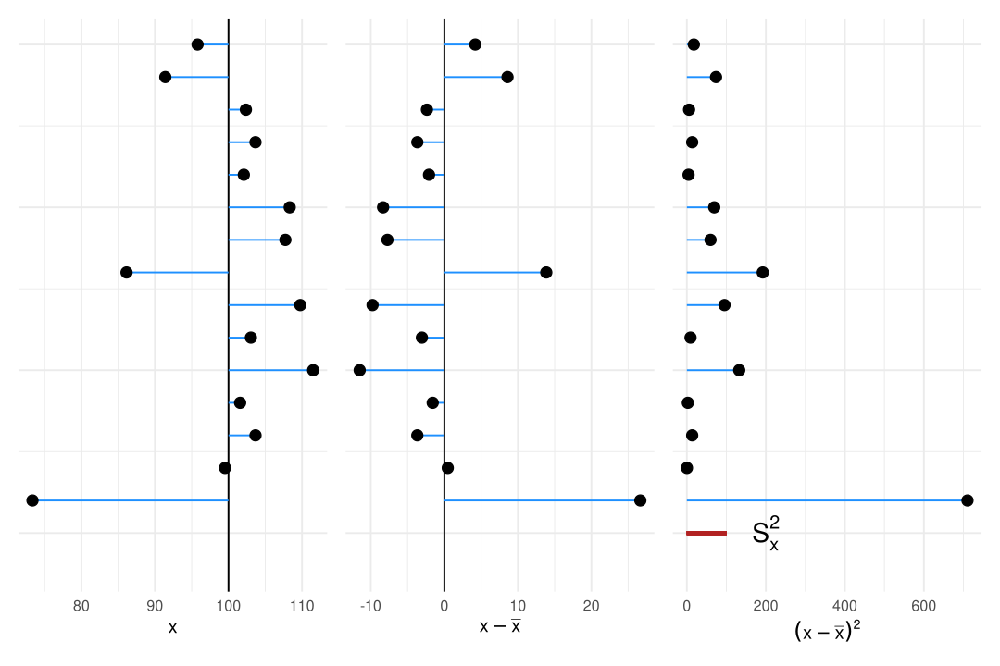
Per la varianza in R abbiamo la funzione var(). Come vedete, di default in R è implementata la versione della varianza corretta che divide per \(n - 1\):
Infine possiamo fare la radice quadrata della varianza per ottenere la deviazione standard:
\[ S_x = \sqrt{\frac{1}{n - 1} \sum^n_{i = 1} (x_i - \bar{x})^2} \]
La deviazione standard, al contrario della varianza, è direttamente intepretabile nella scala della variabile (non al quadrato) e quindi si utilizza per descrivere la variabilità.
Possiamo vederlo chiaramente in questo grafico. La deviazione standard torna ad essere nella metrica della variabile intesa come scarto (non al quadrato) dalla media.
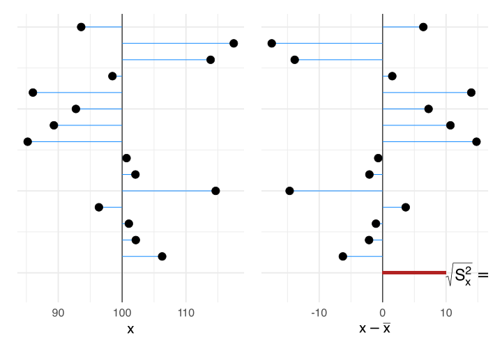
In R abbiamo la funzione sd() che analogalmente a var() utilizza \(n - 1\) come denominatore:
Un “problema” della varianza e deviazione standard è quello di essere legate alla scala della variabile. Sono una misura diretta di variabilità ma nell’unità di misura delle variabile. Viene calcolato come:
\[ CV = \frac{S}{|\bar{x}|} \]
Ovvero la deviazione standard divisa per il valore assoluto della media (per evitare valori negativi). il CV rappresenta quindi la grandezza relativa della deviazione standard rispetto alla media.
Warning
Attenzione che il CV è sensato solo con variabili su scala a rapporti quindi con zero inteso come assenza della proprietà misurata.
Vediamo un esempio (banale ma utile). Abbiamo altezza in cm e m:
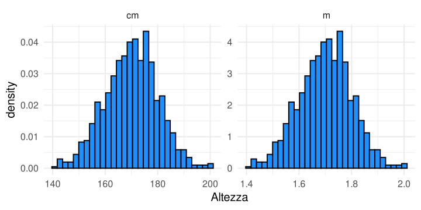
Se calcoliamo il CV per le due variabili (ignorando che sappiamo essere una trasformazione):
head(altezza, 5)
## [1] 165.5870 169.5775 162.2884 167.9476 161.5088
altezza_m <- altezza/100
head(altezza_m, 5)
## [1] 1.655870 1.695775 1.622884 1.679476 1.615088
sd(altezza)
## [1] 10
sd(altezza_m)
## [1] 0.1
sd(altezza) / abs(mean(altezza))
## [1] 0.05882353
sd(altezza_m) / abs(mean(altezza_m))
## [1] 0.05882353Il coefficiente di variazione è lo stesso quindi le due variabili sono ugualmente disperse.
Un aspetto importante dal punto di vista univariato è quello della trasformazione delle variabili. Le trasformazioni sono operazioni che cambiano ad esempio la scala della variabile per migliorare l’intepretabilità o risolvere problemi di scala.
Una prima operazione comune è quella di centrare le variabili su un determinato valore. L’idea è semplice. Chiamiamo \(x_t\) la variabile \(x\) trasformata:
\[ x_{t_i} = x_i - c \]
Dove \(c\) è un valore sul quale si decide di centrare la variabile. Questa operazione permette di posizionare lo zero in un punto arbitrario. Di solito si utilizza la media (mean-centering).
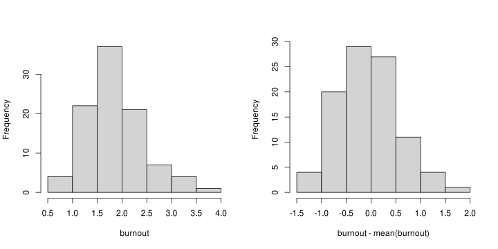
[1] 1.8 1.4 2.7 1.9 2.6 2.1[1] -0.11520833 -0.51520833 0.78479167 -0.01520833 0.68479167 0.18479167[1] -0.1 -0.5 0.8 0.0 0.7 0.2[1] -0.11520833 -0.51520833 0.78479167 -0.01520833 0.68479167 0.18479167[1] 1.1 0.7 2.0 1.2 1.9 1.4Standardizzare invece richiede di dividere per una quantità che diventerà la nuova unità di misura della variabile. Anche qui si possono fare diverse operazioni, la più comune è quella di dividere per la deviazione standard.
\[ x_{t_i} = \frac{x_i}{s_x} \]
La nuova variabile sarà espressa in multipli di deviazioni standard.
Se combiniamo la centratura rispetto alla media e la standardizzazione con la deviazione standard, otteniamo una quantità conosciuta come punti \(z\). Questi non sono altro che una trasformazione dei dati grezzi in unità di deviazione standard rispetto alla media.
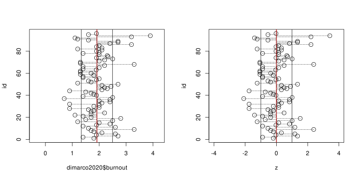
Il vantaggio di esprimere i valori in punti \(z\) (o valori standardizzati) è quello di avere subito un’idea di come quel valore si posizione nella distribuzione. Un valore di \(\pm 1\) ci dice che quell’osservazione è 1 deviazione standard sotto o sopra la media.
Assumendo la normalità (chiaramente un’assunzione e potenzialmente un limite) sappiamo come sono i quantili di una distribuzione normale standard (\(\mu = 0\), \(\sigma^2 = 1\)) e quindi sappiamo quanto anomala può essere un’osservazione.
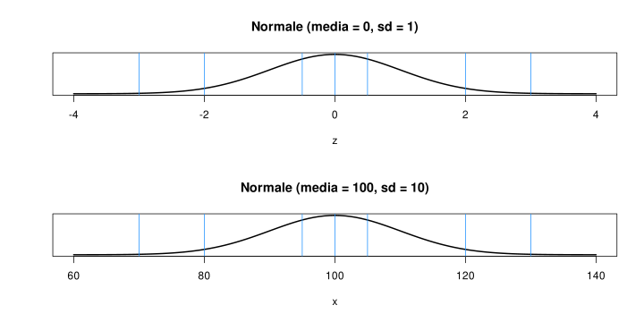
Abbiamo parlato principalmente di variabili numeriche intese come principalmente intervalli o rapporti (ma anche ordinali in un certo senso). Tuttavia ci sono anche statistiche descrittive che sono specifiche per le variabili categoriali.
Quando abbiamo una variabile categoriale la cosa più semplice da calcolare è la frequenza per ogni modalità \(j\) (livello). Se \(N\) è il numero totale di osservazioni ed \(n_j\) è il numero di osservazione per la modalità \(j\) allora \(f_j = n_j\)
In R è molto semplice possiamo usare la funzione table():
Le frequenze relative riscalano il totale rispetto a 1 (o 100%) semplicemente dividendo \(f_j\) per il totale:
\[ p_j = \frac{f_j}{N} \]
In R possiamo farlo manualmente o usando la funzione prop.table()
La moda è semplicemente la modalità (livello) della variabile associato alla frequenza massima. Non esiste una funzione in R ma possiamo facilmente calcolarla manualmente:
Nel caso di più modalità associate alla frequenza massima si riportano tutte le mode e la distribuzione si definisce multimodale. Attenzione che per quanto la moda sia definita anche per variabili continue/numeriche di solito è meno utilizzata.
Per gestire il caso multimodale potremmo scrivere una funzioncina di questo tipo:
L’indice di entropia di Shannon permette di valutare la variabilità di variabili categoriali. La variabilità qui è intesa in termini di entropia ovvero grado di informazione. \(p_j\) è la frequenza relativa della modalità \(j\).
\[ E = - \sum^j_{i = 1} p_i \ln{(p_i)} \]
L’idea è che entropia massima si trova quando tutte le \(j\) modalità hanno lo stesso valore di probabilità mentre il valore minimo (\(E = 0\)) si ottiene quando la frequenza è concentrata su una sola modalità.
Vediamo in R:
central north south
0.2916667 0.4895833 0.2187500 [1] 1.041498Possiamo anche calcolare un indice normalizzato che va da 0 (minima entropia) a 1 (massima entropia) dividendo per \(\ln(j)\) (numero di modalità):
[1] 0.9480122Vediamo graficamente:
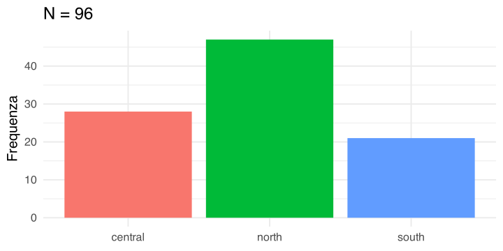
Vediamo qui un esempio di come l’entropia varia al concentrarsi/disperdersi delle frequenze relative tra le modalità:
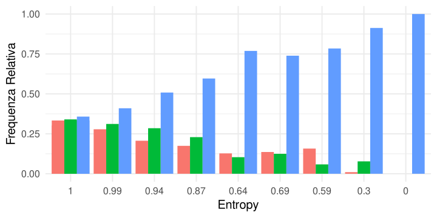
Il modo sicuramente più efficace di affrontare un dataset è quello di rappresentare graficamente le variabili in modo univariato o multivariato (dove possibile). Qualche precisazione rispetto ai grafici:
Partiamo con un grafico molto semplice, semplicemente rappresentiamo i valori ordinati. Non è un grafico molto utile, mancano diverse informazini importanti. Abbiamo un’idea solo del range dei dati.
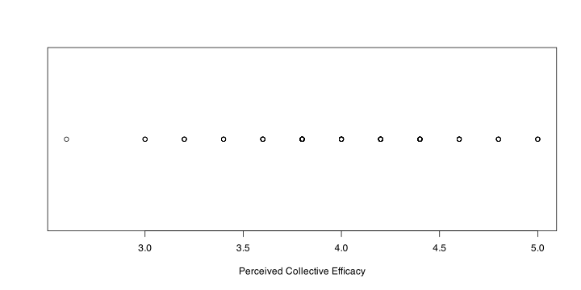
Il modo più immediato per rappresentare una variabile quantitativa è l’istogramma. L’idea è quella di dividere in bins una variabile numerica e rappresentare la frequenza delle osservazioni comprese in quel bin.
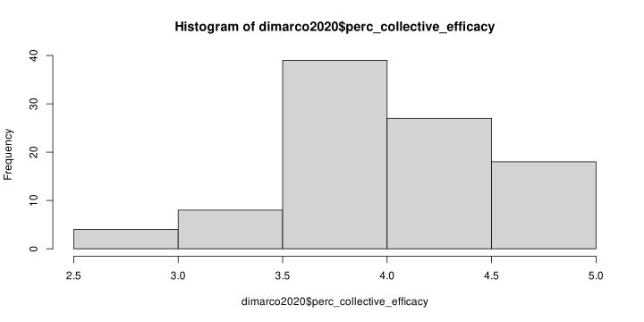
Il parametro fondamentale qui è il numero di bin. All’aumentare del numero di bin l’informazione diventa più precisa ma diminuisce il numero di osservazioni per bin.
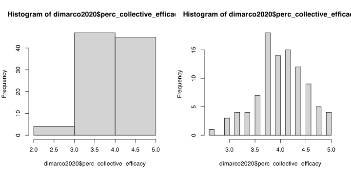
Questo si vede in modo particolare per variabili con molti valori tra due interi:
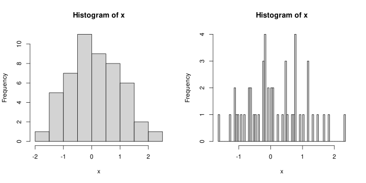
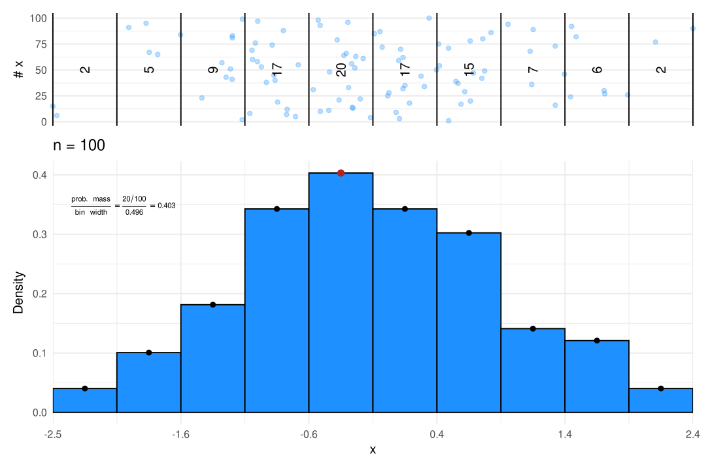
Il boxplot è una rappresentazione grafica tanto “semplice” quanto informativa, soprattutto rispetto all’istogramma.
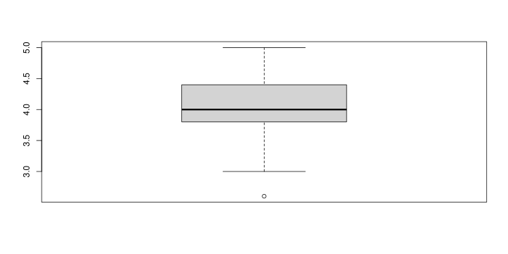
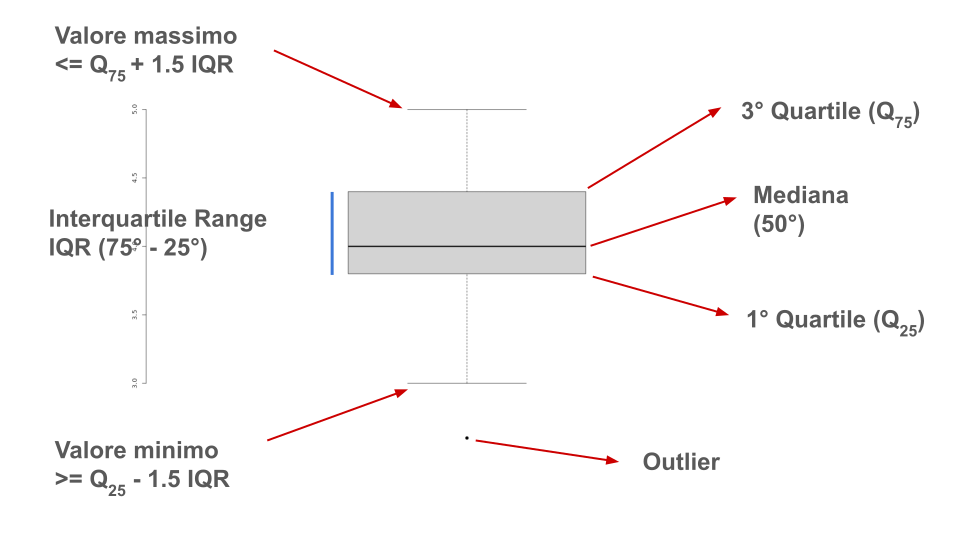
Il grafico a barre (o barplot) è la rappresentazione fondamentale per quanto riguarda variabili di tipo categoriale o ordinale. Da non confondere con l’istogramma con bins di larghezza variabile, il grafico a barre rappresenta la frequenza (relativa o assoluta) di una certa modalità/livello di una variabile categoriale.
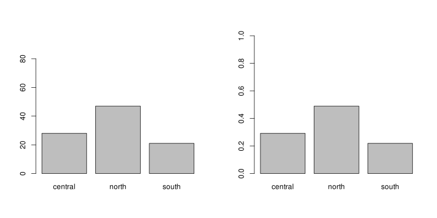
Il barplot può essere sensato anche per variabili quantitative ma con numeri solo interi. Se usato con numeri con la virgola, diventa sempre meno informativo e difficile da leggere.
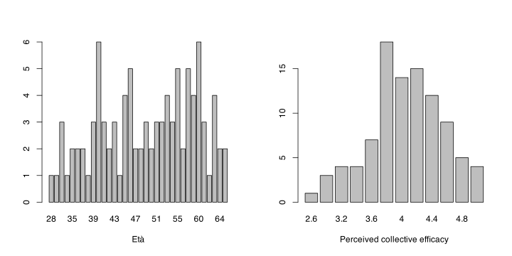
Il modo migliore per indagare la forma di una distribuzione oltre a rappresentarla graficamente ad esempio con un istogramma è il Q-Q Plot (quantile-quantile plot). Questo plot rappresenta i quantili empirici dei dati con i quantili teorici di una distribuzione normale. Possiamo usare qqnorm() in R:
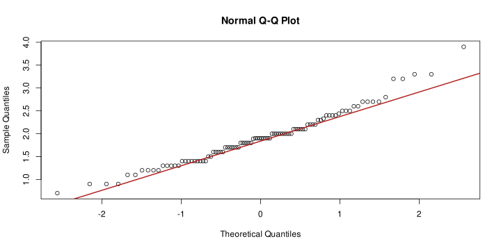
In caso di una distribuzione normale perfetta i punti dovrebbero stare sulla linea, come se avessere una correlazione perfetta. Deviazioni dalla linea indicano deviazioni da una distribuzione normale.
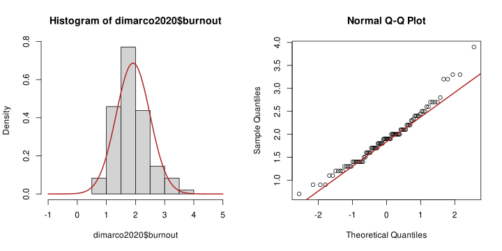
L’interpretazione parte dal concetto di standardizzazione. Un punto \(z\) lo abbiamo definito come:
\[ z_i = \frac{x_i - \bar{x}}{s_x} \]
Questo significa anche che, assumendo una distribuzione normale dove \(z = 2\) e \(z = -2\) equivalgono alla stessa distanza dalla media, quindi:
\[ x_i = \bar{x} + z_i s_x \]
Quindi dato un punto \(z\) possiamo sapere (assumendo normalità) quale sarebbe il valore previsto.
Inoltre sappiamo che, data la normalità (teorica) abbiamo questo tipo di relazione tra quantili e probabilità cumulata. Quindi un punto \(z = 1\) con \(\mu = 100\) e \(\sigma = 15\) equivale ad un valore di 115.
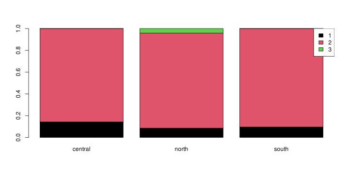
Vediamolo con la variabile burnout che ha media 1.92 e deviazione standard 0.58. Con \(z = 1\) ci aspettiamo (assumendo normalità) un valore di circa \(x = 2.5\).
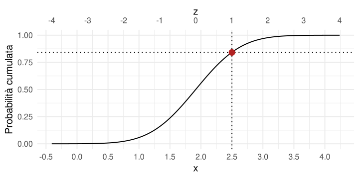
Ora possiamo confrontare questo valore teorico con il valore empirico ovvero il valore di x che è associato ad una probabilità cumulata di circa ~84%.
84.13447%
2.43711 Se facciamo questo per ogni valore otteniamo il risultato di qqnorm(). Se i valori empirici sono distanti dalla linea teorica, significa che il valore empirico è distante da quello teorico assumendo la normalità.
Il confronto con l’istogramma rende ancora più intuitivo cosa sta succedendo:
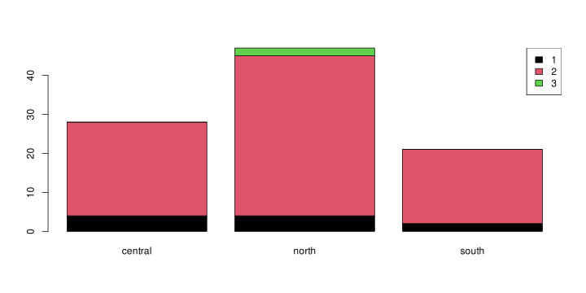
Le misure di forma ci forniscono informazioni riguardo la forma della distribuzione dei dati. Indici di tendenza centrale e dispersione possono essere influenzati dalla forma della distribuzione. Tendenzialmente la forma viene intesa come deviazione dalla simmetria di una distribuzione normale. Gli aspetti principali sono:
Entrambi questi indici sono rapportati alla distribuzione normale. La distribuzione normale per definizione non ha ne asimmetria ne curtosi.
L’asimmetria indica una deviazione dalla simmetria della normale. Possiamo avere asimmetria negativa e positiva:
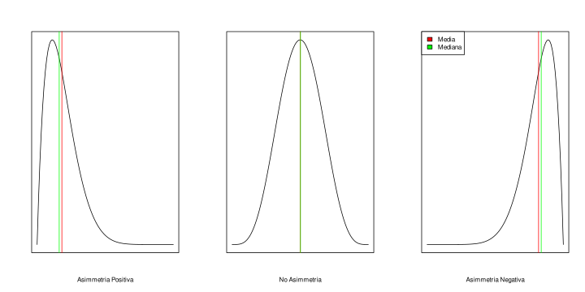
Il calcolo effettivo è più complesso e ci sono diversi modi di calcolarlo (https://en.wikipedia.org/wiki/Skewness). In R invece è molto semplice usando il pacchetto psych:
Il segno indica il tipo di asimmetria. Valori vicini a zero indicano la simmetria.
La curtosi indica il grado di appuntimento rispetto alla distribuzione normale. In pratica si intende quanti dati ci sono sulle code rispetto alla distribuzione normale. Ci sono due tipi di curtosi:
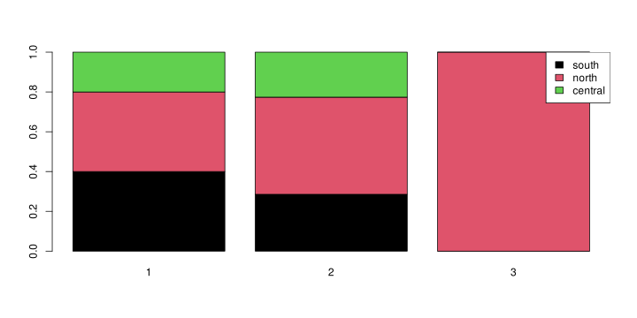
Il calcolo effettivo è più complesso e ci sono diversi modi di calcolarla (https://en.wikipedia.org/wiki/Kurtosis). In R invece è molto semplice usando il pacchetto psych:
Il segno indica il tipo di curtosi. Valori vicini a zero indicano assenza di curtosi.
La principale tipologia di relazione bivariata è sicuramente la correlazione ma possiamo avere relazioni bivariate tra:
Il modo più semplice di rappresentare la relazione tra due variabili categoriali è una tabella di contingenza. Ad esempio vediamo la relazione tra residence e status:
| residence | status | Total | ||
|---|---|---|---|---|
| 1 | 2 | 3 | ||
| central | 4 | 24 | 0 | 28 |
| north | 4 | 41 | 2 | 47 |
| south | 2 | 19 | 0 | 21 |
| Total | 10 | 84 | 2 | 96 |
Questa tabella conta la frequenza assoluta di tutti i possibili incroci tra due variabili categoriali.
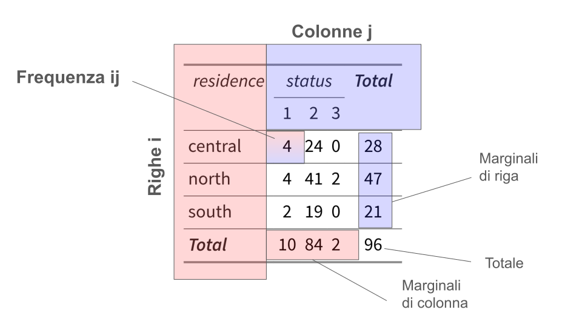
Possiamo anche calcolare le frequenze relative. Rispetto al caso univariato però abbiamo diversi modi di farlo: per riga, per colonna o totale. Partiamo dal totale:
| residence | status | Total | ||
|---|---|---|---|---|
| 1 | 2 | 3 | ||
| central | 4 4.2 % |
24 25 % |
0 0 % |
28 29.2 % |
| north | 4 4.2 % |
41 42.7 % |
2 2.1 % |
47 49 % |
| south | 2 2.1 % |
19 19.8 % |
0 0 % |
21 21.9 % |
| Total | 10 10.4 % |
84 87.5 % |
2 2.1 % |
96 100 % |
Poi possiamo vedere per riga. Di base ogni riga somma a 1 (100%) e vediamo per ogni modalità della colonna la sua percentuale.
| residence | status | Total | ||
|---|---|---|---|---|
| 1 | 2 | 3 | ||
| central | 4 14.3 % |
24 85.7 % |
0 0 % |
28 100 % |
| north | 4 8.5 % |
41 87.2 % |
2 4.3 % |
47 100 % |
| south | 2 9.5 % |
19 90.5 % |
0 0 % |
21 100 % |
| Total | 10 10.4 % |
84 87.5 % |
2 2.1 % |
96 100 % |
Per colonna, possiamo fare lo stesso:
| residence | status | Total | ||
|---|---|---|---|---|
| 1 | 2 | 3 | ||
| central | 4 40 % |
24 28.6 % |
0 0 % |
28 29.2 % |
| north | 4 40 % |
41 48.8 % |
2 100 % |
47 49 % |
| south | 2 20 % |
19 22.6 % |
0 0 % |
21 21.9 % |
| Total | 10 100 % |
84 100 % |
2 100 % |
96 100 % |
Possiamo anche rappresentare due variabili con un barplot:
Vediamo quelle relative (totale):
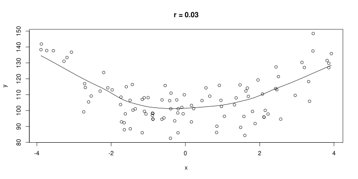
Relative per colonna:
Relative per riga:
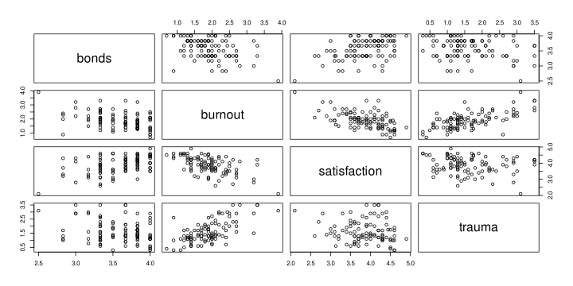
Il modo più semplice per visualizzare una relazione tra due variabili quantitative è lo scatter plot:
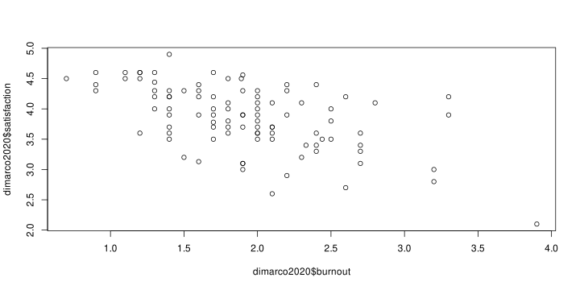
In questo caso vediamo chiaramente che c’è un trend. All’aumentare del burnout diminuisce la satisfaction. Un modo per quantificare questa relazione è l’indice di correlazione di Pearson \(r\). La correlazione tra due variabili \(x\) e \(y\) è:
\[ r_{xy} = \frac{s_{xy}}{s_x s_y} \]
Dove \(s_{xy}\) è la covarianza (ora lo vediamo) e \(s\) è la deviazione standard.
Partiamo dalla covarianza \(s_{xy}\) che viene definita come:
\[ s_{xy} = \frac{\sum^n_{i = 1} (x_i - \bar{x})(y_i - \bar{y})}{n - 1} \]
Dove \(\sum^n_{i = 1} (x_i - \bar{x})(y_i - \bar{y})\) viene definita codevianza.
A livello univariato abbiamo definito la varianza come la media degli scarti al quadrato dalla media. In pratica è un modo per quantificare la dispersione dei dati attorno alla loro media.
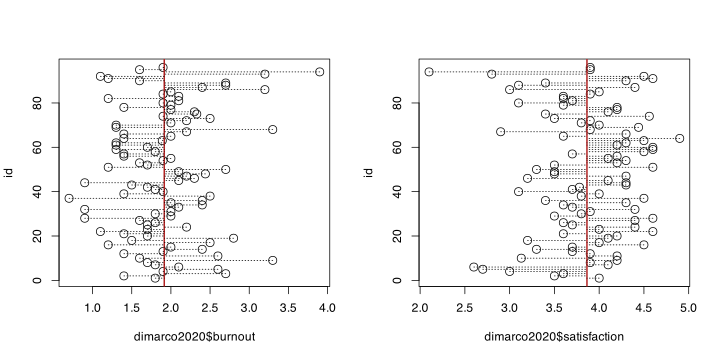
Se due variabili sono legate allora l’idea è che due valori di due coppie di variabili co-varino allo stesso modo rispetto alla loro media. Questo è quello che dice la codevianza \(\sum^n_{i = 1} (x_i - \bar{x})(y_i - \bar{y})\). Stiamo moltiplicando lo scarto della media su \(x\) con lo scarto dalla media su \(y\).
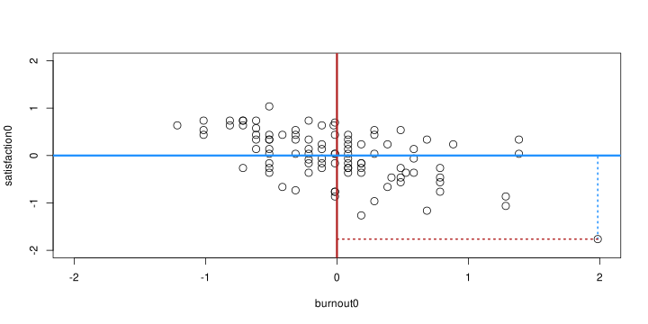
La moltiplicazione degli scarti, per ogni osservazione ci restituisce un valore con un segno. Il numeratore (codevianza) cattura quindi il segno (direzione) del prodotto degli scarti dalla media.
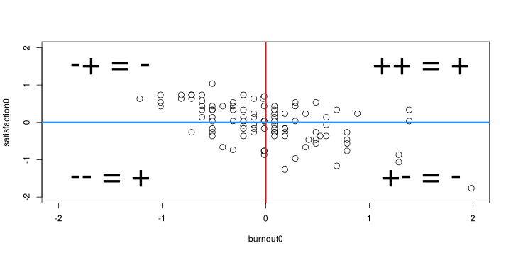
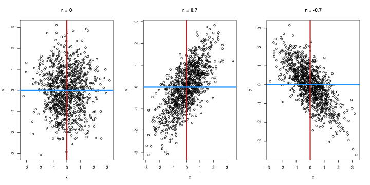
Quindi la nostra codevianza può essere:
Come per la devianza, la codevianza è una somma che rappresenta la dispersione combinata di due variabili e come co-deviano assieme.
Dividendo per \(n - 1\) otteniamo la covarianza che indica la forza della co-variazione di due variabili. Ovviamente dipende dalla scala della variabile e non è direttamente intepretabile se non per il segno.
Per intepretare la covarianza quello che viene fatto è standardizzarla rispetto alla variazione delle singole variabili. Ovvero dividiamo la covarianza (media del prodotto degli scarti) per il prodotto delle deviazioni standard.
On in alternativa potete vederla come la covarianza di due variabili che sono state standardizzate.
In R possiamo usare le funzioni cov() e cor():
La correlazione è un indice, compreso tra -1 (perfetta correlazione negativa) e +1 (perfetta correlazione positiva). Questo indice rappresenta la relazione lineare tra due variabili e non una relazione generica. Due variabili potrebbero essere associate non linearmente ma avere una correlazione bassa.
In questo caso la relazione è chiaramente non lineare (quadratica) e la correlazione è praticamente a zero.
Le matrici di correlazione sono il modo principale per rappresentare la relazione tra più di due variabili.
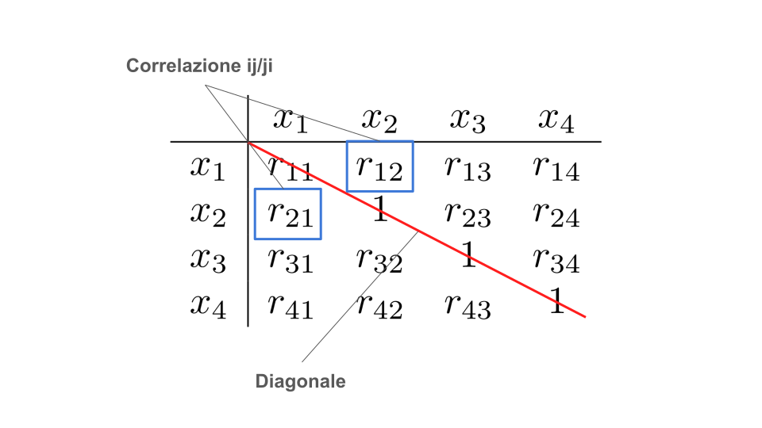
Se abbiamo \(p\) variabili, abbiamo una matrice quadrata \(p \times p\).
Di queste correlazioni, quelle informative (escludendo le ripetizioni) sono \((p^2 - p) / 2\) perchè teniamo solo il triangolo superiore/inferiore e togliamo la diagonale.
La correlazione di una variabile con se stessa è per definizione 1 quindi la diagonale non è informativa.
In R possiamo sempre usare la funzione cor() su più variabili (solitamente colonne di un dataframe):
Possiamo anche visualizzare graficamente con il pacchetto corrplot:
Possiamo anche visualizzare degli scatterplot a coppie:
La matrice di correlazione non deve essere confusa con quella di varianza-covarianza. La struttura è la stessa ovvero una matrice quadrata \(p \times p\) dove \(p\) è il numero di variabili. Però la diagonale non è 1 (la covarianza di una variabile con se stessa non è 1) e gli elementi fuori dalla diagonale non sono la correlazione (> 1 o < -1).
In R possiamo sempre usare la funzione cov() su più variabili (come per cor()):
bonds burnout satisfaction trauma
bonds 0.11 -0.08 0.08 -0.06
burnout -0.08 0.34 -0.17 0.30
satisfaction 0.08 -0.17 0.28 -0.06
trauma -0.06 0.30 -0.06 0.61 bonds burnout satisfaction trauma
bonds 1.00 -0.41 0.46 -0.23
burnout -0.41 1.00 -0.55 0.66
satisfaction 0.46 -0.55 1.00 -0.15
trauma -0.23 0.66 -0.15 1.00Il primo punto da capire è la diagonale. La correlazione di una variabile con se stessa è 1. La covarianza di una variabile con se stessa cosa rappresenta? Vediamolo:
\[ \begin{aligned} s_{xx} &= \frac{1}{n - 1} \sum^n_{i = 1} (x_i - \bar{x}) (x_i - \bar{x}) \\ &= \frac{1}{n - 1} \sum^n_{i = 1} (x_i - \bar{x})^2 \\ \end{aligned} \]
Vi ricorda qualcosa? E’ esattamente la formula della varianza. Nella diagonale di una matrice di varianza covarianza abbiamo le varianze delle \(p\) variabili.
Gli altri elementi (sempre simmetrici) sono le covarianze. Anche qui, possiamo scomporre la formula per renderla più chiara e legarla alla matrice di correlazione. La correlazione è:
\[ r_{xy} = \frac{s_{xy}}{s_x s_y} \]
Quindi, la covarianza può essere espressa (risolvendo l’equazione per \(s_{xy}\)) come il prodotto della correlazione e delle due deviazioni standard.
\[ s_{xy} = r_{xy} s_x s_y \]
La matrice di covarianza quindi contiene molta più informazione ed è sufficiente anche per calcolare quella di correlazione. Senza avere le deviazioni standard invece, non è possibile passare da quella di correlazione a quella di covarianza.
Tornando a R, vediamo che possiamo passare da una all’altra:
bonds burnout satisfaction trauma
bonds 1.00 -0.41 0.46 -0.23
burnout -0.41 1.00 -0.55 0.66
satisfaction 0.46 -0.55 1.00 -0.15
trauma -0.23 0.66 -0.15 1.00 bonds burnout satisfaction trauma
bonds 1.00 -0.41 0.46 -0.23
burnout -0.41 1.00 -0.55 0.66
satisfaction 0.46 -0.55 1.00 -0.15
trauma -0.23 0.66 -0.15 1.00[1] -0.08034901[1] -0.08034901Qui riportano una matrice di correlazione:
Kelada, L., Schiff, M., Gilbar, O., Pat-Horenczyk, R., & Benbenishty, R. (2023). University students’ psychological distress during the COVID-19 pandemic: A structural equation model of the role of resource loss and gain. Journal of Community Psychology, 51, 3012–3028. https://doi.org/10.1002/jcop.23076
Kelada et al. (2023)
Conoscendo anche le varianze possiamo costruire una matrice di varianza covarianza e quindi avere in una matrice tutta (più o meno) l’informazione necessaria.
Attenzione che, nonostante le matrici che abbiamo visto possano essere usate per riportare e visualizzare le relazioni tra \(p\) variabili sono comunque relazioni bivariate. Nel senso che la correlazione \(r_{xy}\) sta considerando solo \(x\) e \(y\) ignorando la presenza di altre variabili.
Quindi la matrice di varianza-covarianza non rappresenta delle relazioni multivariate ma sempre bivariate. Vi ricordo il third-variable problem.
Una certa correlazione potrebbe cambiare o sparire quando viene considerata una terza (o quarta) variabile. Questo è quello che vedremo con la regressione lineare.